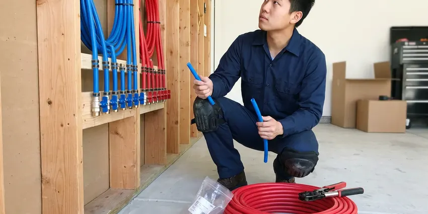

Water Line Installation in McAllen, TX
Ensure a strong and steady water flow to your McAllen, TX property with expert water line installation from DFJ Plumbing, your trusted local plumbing team.
- Fast, Dependable Service
- Expert, Licensed Plumbers
- Upfront Pricing
- Guaranteed Workmanship

Need a New Water Line Installed in McAllen, TX?
Contact DFJ Plumbing today for a free estimate on your main water line project.
Your Trusted Source for Water Line Installation in McAllen, TX
At DFJ Plumbing, we understand the critical role your water line plays in your home. We provide expert water line installation in McAllen, TX, using high-quality materials and proven techniques to ensure a durable and efficient water supply for years to come.
Our expertise includes:
- Main Water Line Replacement & Installation
- PEX and Copper Pipe Installation
- Compliance with Local Texas Plumbing Codes

Additional Plumbing Installation Services in McAllen, TX
We install water heaters, pumps, lines, and fixtures across McAllen, TX with precision workmanship that meets every local code.


Customers
Why Choose DFJ Plumbing for Water Line Installation in McAllen, TX?
We prioritize quality materials and precise installation techniques to prevent future issues, saving you time and money down the road.
- Local Expertise, Our plumbers are familiar with McAllen's specific plumbing codes and typical soil conditions, which can impact water line durability.
- Quality Materials, We use only high-grade materials like PEX and copper, known for their longevity and resistance to corrosion and leaks, ideal for Texas conditions.
- Licensed & Insured, All our technicians are fully licensed and insured, providing you with peace of mind and professional accountability for your installation.
Citywide Coverage
DFJ Plumbing proudly serves every neighborhood in McAllen, TX, ensuring that no matter where you are located, our expert water line installation services are readily available. We are your local plumbing partner, committed to providing timely and efficient service across the entire area.
Experienced Team
Our plumbing team at DFJ Plumbing has extensive experience specifically in water line installation, handling everything from complex main line replacements to new construction hookups. They are continuously trained on the latest techniques and materials to ensure every job is done right.
Safety-First Approach
Before any water line installation, DFJ Plumbing conducts thorough site assessments to ensure the safest practices are employed and all work meets or exceeds McAllen, TX's stringent plumbing regulations. Your family's safety and water quality are our top priorities.
Trusted Certified McAllen Plumbing Services Professionals
At DFJ Plumbing, we take pride in providing licensed, certified plumbing services throughout McAllen, TX. Backed by recognized industry credentials, our experienced plumbers combine technical skill with genuine customer care. Whether it is repair, installation, or maintenance, we follow strict safety and quality standards to deliver lasting results you can trust.
Call Us Now PHCC Plumbing Contractor Recognition
PHCC Plumbing Contractor Recognition Better Business Bureau (BBB) Accreditation
Better Business Bureau (BBB) Accreditation Angi Certified Pro
Angi Certified Pro ISO 9001 Quality Management Certification
ISO 9001 Quality Management CertificationDurable Water Line Installation Services in McAllen, TX
Main Water Line Replacement in McAllen
Over time, main water lines can corrode, crack, or leak due to shifting soil, tree root intrusion, or age. DFJ Plumbing specializes in replacing old, failing main water lines, often upgrading from galvanized steel or polybutylene to more durable PEX or copper. We handle the excavation, pipe laying, and connection to your home and the city's water supply, ensuring minimal disruption and lasting performance. Our team in McAllen is experienced with local soil types and infrastructure.

New Water Line Installation for Construction in McAllen, TX
Building a new home or commercial property in McAllen? DFJ Plumbing provides complete new water line installation services, from planning and trenching to connecting to the municipal water source. We work closely with contractors and homeowners to ensure your new water line meets all specifications and local plumbing codes in Texas. Our installations guarantee a strong and reliable water supply from day one, using modern, resilient piping materials.
PEX Water Line Installation in McAllen
PEX (cross-linked polyethylene) piping is a popular choice for its flexibility, durability, and resistance to corrosion and freezing, making it ideal for the diverse Texas climate. DFJ Plumbing expertly installs PEX water lines for both new construction and replacements in McAllen. PEX offers excellent flow rates and is less prone to bursting than traditional rigid pipes, providing a long-lasting and cost-effective solution for your home's plumbing.
Copper Water Line Installation in McAllen, TX
Copper has been a trusted material for water lines for decades, known for its longevity, antimicrobial properties, and resistance to high temperatures and pressure. DFJ Plumbing provides professional copper water line installation in McAllen, TX, for homeowners who prefer its proven track record. While often more expensive upfront, copper offers superior reliability and can add value to your property. Our skilled plumbers ensure precise soldering and secure connections.
Emergency Water Line Repair & Installation in McAllen
A burst or severely leaking water line can cause significant damage and disrupt your daily life. DFJ Plumbing offers emergency water line repair and installation services in McAllen when immediate action is needed. Our team is equipped to quickly diagnose the issue, isolate the problem, and perform necessary repairs or full replacements to restore your water service promptly and minimize property damage.
Water Line Upgrades & Relocation in McAllen, TX
Sometimes, home renovations or landscaping projects require existing water lines to be upgraded or relocated. DFJ Plumbing provides expert services for modifying your current water line infrastructure in McAllen, TX. Whether you need to move a line to accommodate a new addition or upgrade to a larger diameter pipe for better water pressure, our plumbers ensure the work is done safely and to code, integrating seamlessly with your home's system.
Compliance and Permits for Water Lines in McAllen
Installing or replacing a main water line in McAllen often requires specific permits and adherence to local plumbing codes. DFJ Plumbing handles all necessary permits and ensures every water line installation meets strict municipal and state regulations. We are well-versed in McAllen's permitting process, ensuring your project is compliant and avoids potential fines or issues down the line. We take the stress out of navigating local bureaucracy.

Insulating Water Lines for Texas Weather in McAllen, TX
While Texas winters can be mild, occasional hard freezes can still pose a risk to exposed water lines. DFJ Plumbing offers water line installation with proper insulation techniques, especially for lines running through unheated spaces or near exterior walls in McAllen, TX. This proactive measure helps protect your pipes from freezing and bursting, safeguarding your home against costly water damage during cold snaps. We recommend appropriate insulation materials based on local climate data.
Water Line Installation Near Me in McAllen, TX
When you search for 'water line installation near me' in McAllen, TX, DFJ Plumbing is your reliable local choice. We understand the specific plumbing needs of homes and businesses in this region, from dealing with expansive clay soils to adapting to varying water pressure.
Our team is always ready to respond quickly to your water line needs, ensuring that residents throughout McAllen have access to expert, dependable plumbing services right in their neighborhood. Don't hesitate to call (737) 405-5978 for assistance.
DFJ Plumbing at a Glance
- Fully licensed plumbing team covering McAllen, TX
- 24/7 emergency service with same-day scheduling
- Upfront, flat-rate pricing before work begins
- 4.9-star rated by 812+ Texas customers
McAllen Map
McAllen Information
- Population
- 146,593
- Area codes
- 956/956/915
- Service area
- McAllen and communities within 40 miles
- Nearby
- Mission, Pharr, Edinburg, Harlingen
Given the expansive clay soils and occasional freeze-thaw cycles in McAllen, TX, properly installed and durable water lines are essential to prevent costly leaks and foundation damage for Texas homeowners.
Expert Services
Trust our professionals for reliable DFJ Plumbing solutions in McAllen, TX.
Our Specialized Plumbing Services in McAllen, TX
At DFJ Plumbing, we provide a complete range of plumbing services across McAllen, TX. From leak detection to full system installations, our team ensures fast, precise, and affordable service for both residential and commercial properties. Explore our core services below:


How Our Water Line Installation Process Works in McAllen, TX
Our goal is to provide a smooth and hassle-free experience from start to finish for your water line project.
Request a Quote
Start by calling (737) 405-5978 to schedule an on-site consultation. Our team will assess your current plumbing, discuss your needs, and provide a detailed, transparent quote.
Site Assessment
We conduct a thorough inspection of your property, identifying the best route for your new water line and checking for any underground utilities. This planning prevents surprises.
Permitting & Prep
DFJ Plumbing handles all necessary permits for water line installation in McAllen. We prepare the site by safely excavating trenches where required, adhering to all safety standards.
Frequently Asked Questions About Water Line Installation in McAllen
The cost of water line installation in McAllen, TX varies widely depending on factors like pipe material (PEX or copper), length of the line, depth of excavation, and site accessibility. A basic main water line replacement can range from $2,500 to $8,000, while new construction installations might be part of a larger plumbing package. We provide a detailed estimate after a site assessment.
PEX is flexible, less expensive, resistant to freezing and corrosion, and has fewer fittings, which means fewer potential leak points. Copper is rigid, more expensive, has a proven track record, is naturally antimicrobial, and can withstand higher temperatures. Both are excellent choices, and the best option depends on your budget, property needs, and local water conditions in McAllen.
Most main water line installations or replacements for a typical residential property in McAllen can be completed within one to three days. This timeline includes excavation, pipe laying, connections, testing, and backfilling. More complex projects, such as those involving extensive trenching or difficult access, may take longer.
Yes, DFJ Plumbing understands that a new water line installation can be a significant investment. We offer flexible financing options to help make your project more affordable. Please speak with our team during your consultation to learn more about the financing plans available for residents in McAllen, TX.
Many areas in Texas, including McAllen, have expansive clay soils that can swell and shrink significantly with changes in moisture content. This movement can put immense stress on underground water lines, potentially causing them to shift, crack, or separate over time. Our installation techniques account for these soil conditions to minimize future issues.
Common signs you might need a new water line include a sudden drop in water pressure, discolored or rusty water coming from your faucets, consistently wet spots in your yard, unusually high water bills without a change in usage, or frequent leaks and repairs on your existing main line. These issues often indicate corrosion or damage.
Installing a main water line is a complex task that involves excavation, understanding plumbing codes, making precise connections, and obtaining permits. It's highly recommended to hire a licensed professional like DFJ Plumbing for water line installation in McAllen, TX, to ensure safety, compliance, and long-term reliability. DIY attempts can lead to costly mistakes and code violations.
DFJ Plumbing uses high-quality, industry-leading brands for our water line installations to ensure durability and reliability. For PEX, we often utilize Uponor, Viega, or Zurn systems. For copper, we source from reputable manufacturers adhering to ASTM standards. We select materials best suited for your specific project and the McAllen environment.
What People Are Saying About Our Plumbing Experts?

Robert G.
The trenchless sewer replacement saved our front yard. They walked us through the camera inspection footage first so we knew exactly what we were paying for.
Sewer Line Replacement · Edinburg, TX
Daniel K.
A pipe burst at 11 pm and they actually answered. The plumber showed up within the hour, shut everything down, and had us back to normal the next morning. Could not ask for more.
Emergency Plumbing · Mission, TX
Mark T.
When our office needed drain cleaning, DFJ Plumbing provided quick, reliable service. The plumber arrived on time and made sure every drain flowed perfectly before leaving. Very satisfied.
Drain Cleaning · Laredo, TX
Sofia M.
Two new toilets installed in one visit, no mess left behind, and the tech even adjusted a faucet he noticed was dripping. Fair pricing and really friendly.
Toilet Installation · Edinburg, TX
Patricia H.
We had a slab leak that two other companies could not find. DFJ Plumbing located it in under an hour, explained our options, and the price matched the quote to the dollar.
Slab Leak Repair · Brownsville, TXLaura S.
I scheduled a water heater replacement, and the team made the process smooth and affordable. The new unit works perfectly, and they cleaned up after completing the job.
Water Heater Replacement · Brownsville, TX